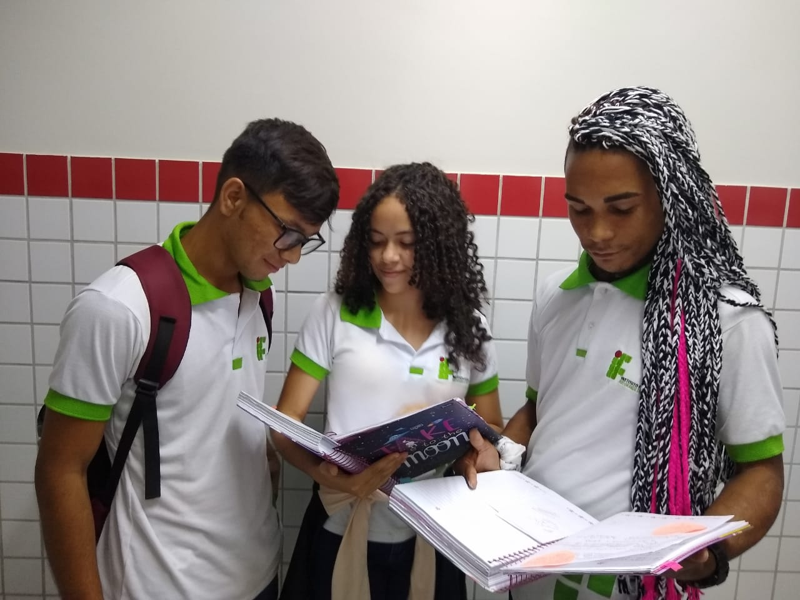
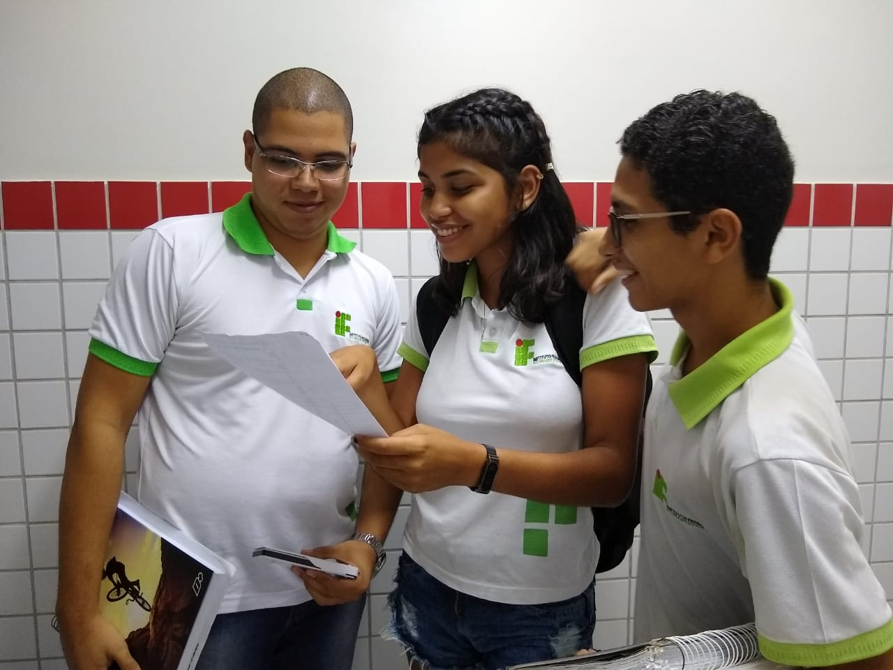

IntegradoCursos que unem o ensino médio com o técnico. São recomendados para pessoas que acabaram de sair do ensino fundamental. Os alunos concluintes do Ensino Fundamental II que desejam ingressar no IFRN na modalidade integrada podem fazer uma avaliação que contem 20 questões de Língua Portuguesa, 20 questões de Matemática e uma Redação. |

SubsequenteRecomendados para alunos que já concluíram o Ensino Médio e estão interessados apenas no técnico. Para aqueles que desejam entrar na modalidade subsequente, a avaliação é aplicada em outro período do ano, mas segue as mesmas disciplinas e respectivas quantidades de questões que o exame para técnio integrado. |

Especialização Voltada a portadores de diploma de graduação que queiram especializar-se em determinada área. A modalidade Especialização permite um ingresso a partir de uma análise curricular, do histórico de experiência e formação da graduação do candidato vinculada à especialização pretendida. |